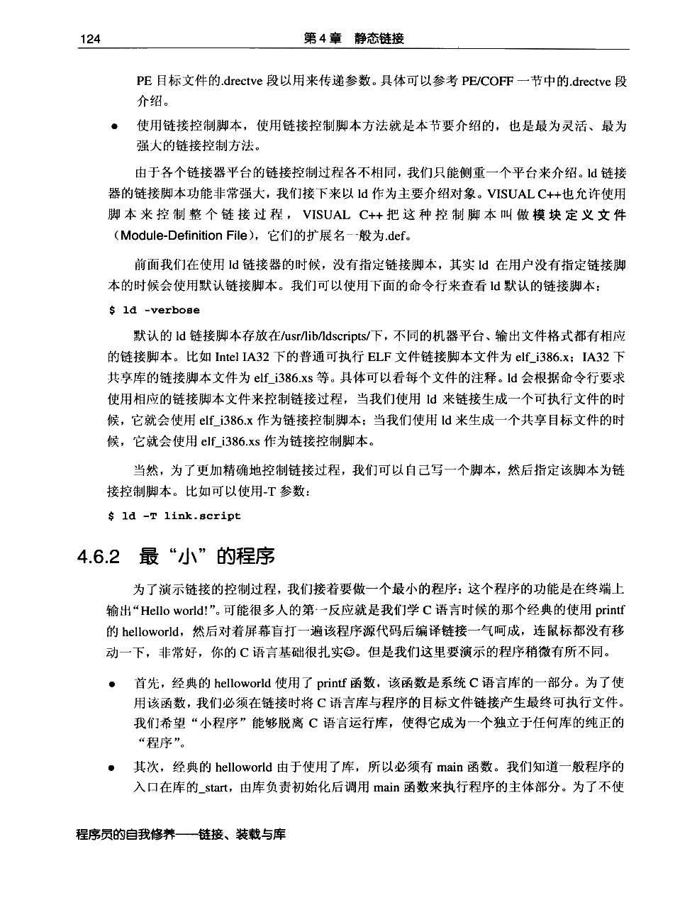
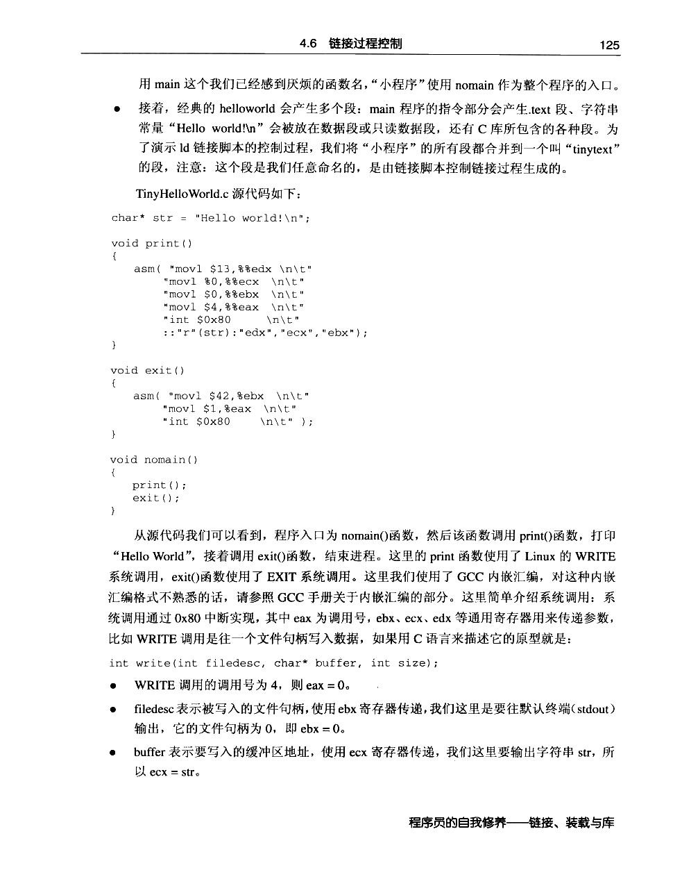
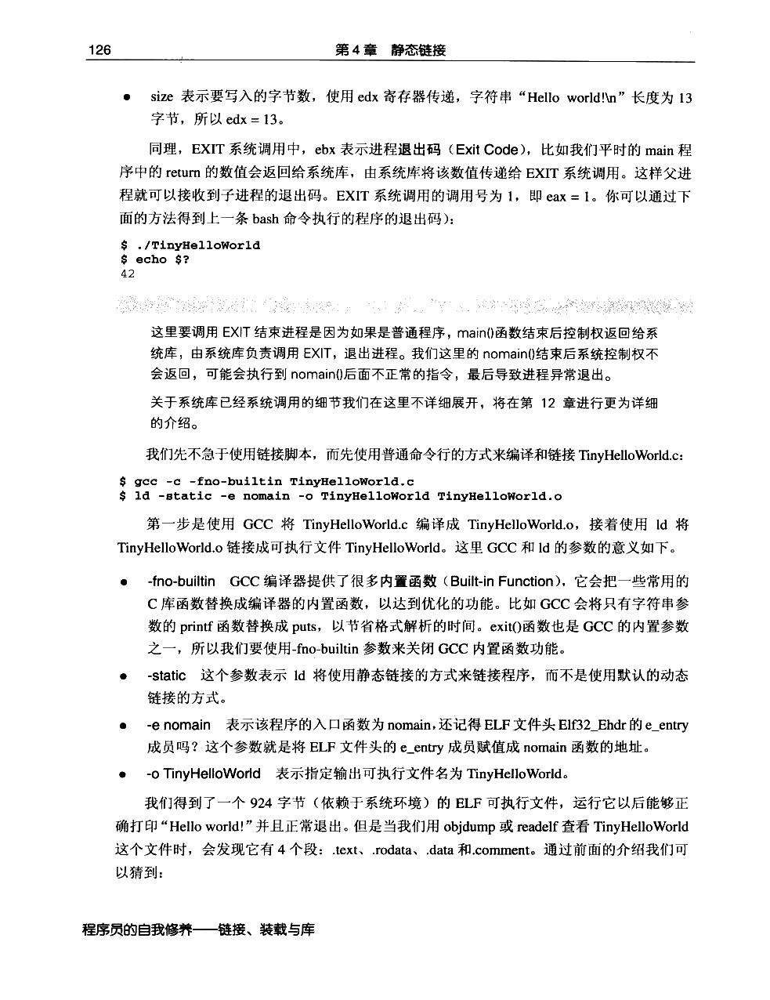
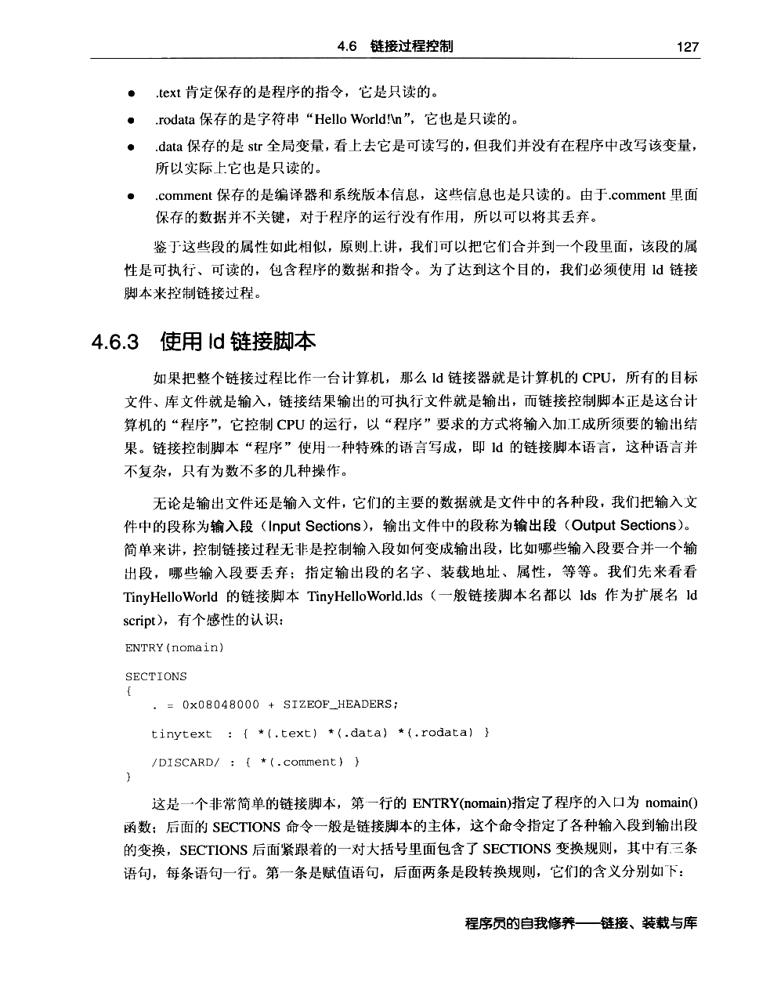
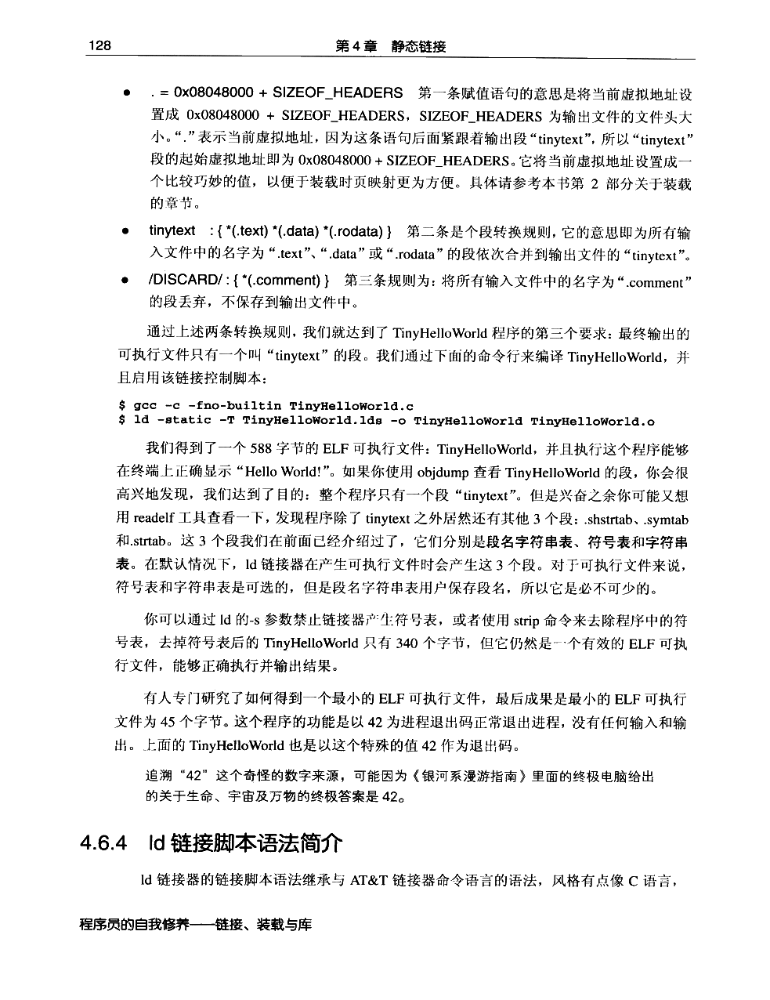
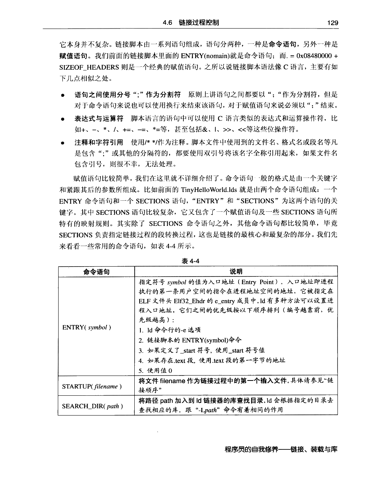
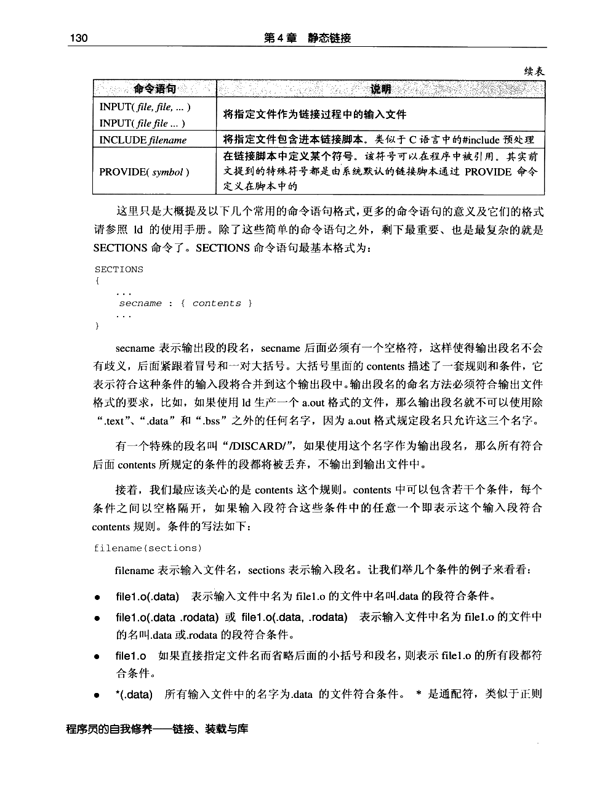
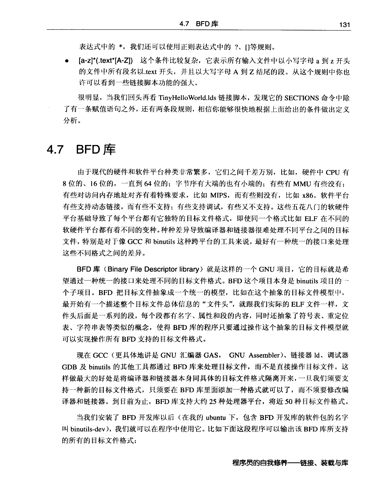

← 返回正文4.6 链接过程控制
PDF 第 146 页 · 书内第 123 页 PDF 第 147 页 · 书内第 124 页
PDF 第 147 页 · 书内第 124 页
PDF 第 148 页 · 书内第 125 页
PDF 第 149 页 · 书内第 126 页
PDF 第 150 页 · 书内第 127 页
PDF 第 151 页 · 书内第 128 页
PDF 第 152 页 · 书内第 129 页
PDF 第 153 页 · 书内第 130 页
PDF 第 154 页 · 书内第 131 页